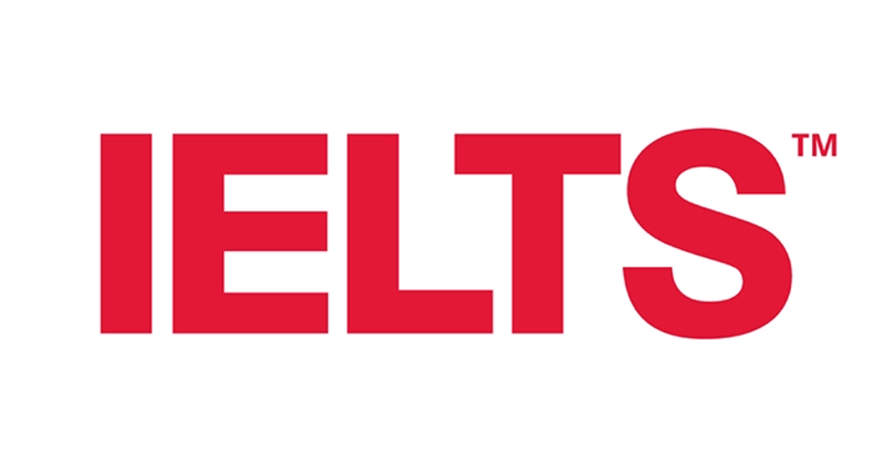

IELTS & PTE Preparation
Compare the tests, understand the requirements, and get the right resources for your study abroad journey.
Testing System
- Four skills: Listening, Reading, Writing, Speaking
- Examiner-led speaking component
- Check required overall and individual band scores
- Use official test preparation materials
- Computer-based test at a test centre
- Speaking responses use a microphone
- Some tasks assess integrated skills
- Confirm accepted test types and required scores
Popular Articles
View all articles ?


Read IELTS & PTE requirements, comparisons and official resources

IELTS AcademicAn examiner-led speaking test
IELTS Academic is designed for undergraduate or postgraduate study and professional registration. The test takes 2 hours 45 minutes: Listening is approximately 30 minutes, Reading and Writing are 60 minutes each, and Speaking is 11–14 minutes. See the official Academic format.
Understand your bands
Your report includes an overall band and scores for each skill. IELTS recommends considering results valid for two years, although the receiving organisation decides its acceptance policy. Read the scoring explanation.
Practise with official materials
Use official Academic sample questions to practise timed reading, listening, the two writing tasks and a speaking interview. Review your weaker skills before scheduling the test.
Find an IELTS centre in PakistanA computer-based test experience
PTE Academic is taken on a computer at a test centre. Some tasks combine skills; speaking responses use a microphone. Review Pearson's current three-section format and Speaking & Writing tasks before practising.
Understand your scores
The score scale is 10–90. Check the university's required overall and skill scores against Pearson's scoring guide. Results usually arrive within two days but can take up to five working days. Reports remain valid for two years from the test date. Share scores through myPTE or your Score Report Code; Pearson says institutions do not accept a paper or PDF report as verification. Official results and sharing guidance.
Practise with current resources
Pearson's preparation hub includes guides and practice options. Practise microphone use, listening, typing and timed responses, using materials that match the current test.
Find PTE centres and feesStart with your course requirements
Before choosing a test, open your university's current English-language requirements for the exact programme and intake. Record the accepted test version, overall score, minimum score in each skill, and how recent the result must be. Check scholarship conditions and the relevant government visa guidance separately.
Use our university profiles, country guides and scholarship directory to find the official application links for Australia, Canada, the United Kingdom, Germany and New Zealand.
| Feature | IELTS Academic | PTE Academic |
|---|---|---|
| Skills | Listening, Reading, Writing and Speaking | Speaking & Writing, Reading and Listening sections assess all four skills |
| Speaking experience | Conversation with a trained examiner | Spoken responses recorded through a microphone |
| Score scale | Band scale up to 9, with whole and half bands | 10–90, with overall and individual skill scores |
| Where to confirm format | Official IELTS Academic guide | Official PTE format guide |
These score scales are different. Follow the institution's published IELTS or PTE requirement rather than assuming a direct conversion.
Choose the right test version
IELTS Academic and General Training serve different purposes. Do not substitute General Training for an Academic requirement. Likewise, PTE Academic is different from PTE Core and PTE Home. Confirm any UKVI or other approved-test requirement with the university and relevant government before paying.
IELTS delivery update for 2026
IELTS announced a transition away from paper-based tests from mid-2026, with timing varying by market. A Writing on Paper option is being introduced in selected markets alongside computer delivery. Check your chosen centre's actual booking options. Previous paper-based results are unaffected by the change. Read IELTS's official announcement.
IELTS requirements for Australian universities
There is no single IELTS score for every Australian degree. Check the IELTS Academic overall requirement and each Listening, Reading, Writing and Speaking minimum on the course page. Also confirm which test formats are accepted and how recent your results must be.
For example, the University of Sydney publishes a standard requirement of IELTS 6.5 overall with at least 6.0 in every band, while some courses require different scores. Use its official English language requirements to check your programme. Treat this as a Sydney example, not a national admission threshold.
When applying from Pakistan, ask the university to assess any proposed evidence of previous English-medium education before assuming you qualify for a test exemption.
PTE accepted universities in Australia
The University of Sydney and the University of Melbourne publish PTE Academic as an accepted English test. Acceptance still depends on the course, score, test conditions and date of your result. Start with these official examples:
- University of Sydney: accepted tests and course score requirements — consult its current concordance table for PTE Academic scores.
- University of Melbourne: undergraduate English requirements — compare the PTE Academic overall and individual skill scores for your degree.
This is a starting list, not a complete list of Australian universities. Before booking, save the requirement for your intended course and intake. University admission and student visa English requirements are separate checks.
Explore Australian universities for Pakistani students and compare our Australian university profiles.
University test acceptance sources checked 19 October 2026. Recheck before booking your test.
Booking from Pakistan
- Confirm acceptance first. Save your programme's official test requirements. Ask admissions if its page does not clearly cover your qualification or intended test version.
- Check local availability. Use the IELTS Pakistan centre finder or Pearson's centre and fee finder. Select your city, test and date in the provider's booking service.
- Read the booking conditions. Check the current fee and currency, accepted identification, name-matching requirements, arrival instructions, cancellation rules and any access arrangements before payment.
- Leave time in your application plan. Allow for preparation, result delivery, institutional verification and a possible retake before the course or scholarship deadline.
We do not publish a single Pakistan test fee because prices depend on the provider, location and test version. Use the amount shown by the official booking service for your selection.
Common questions
Which test is easier?
There is no universal answer. If both are accepted, try official sample tasks and compare your comfort with examiner conversation, recorded speaking, typing and timed questions. Choose based on your requirements and practice experience.
What score do I need?
There is no single score for every university or country. Use the exact programme's overall and individual skill requirements. A scholarship may have additional conditions.
Can I use the same result for every application?
Check each receiving institution's test-version and result-age policy, then follow its official score-sharing instructions. Acceptance by one institution does not establish acceptance by another.
Official sources & last checked
Last checked: . Summaries use the providers' official pages; booking options and institutional policies may change.
- IELTS: Academic format, scoring, 2026 delivery update, sample questions and Pakistan centres.
- Pearson: PTE Academic format, scoring, results and score sharing, preparation and centres and fees.
StudyFlyway is an independent information portal. Test bookings and payments take place with the official providers. Report a correction.